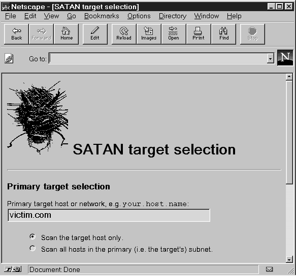
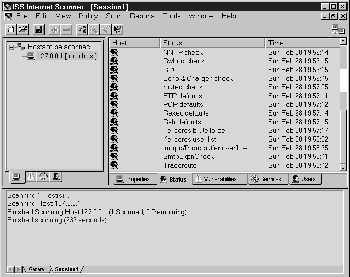
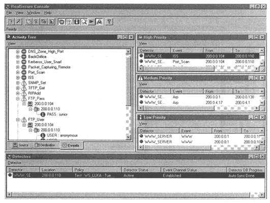
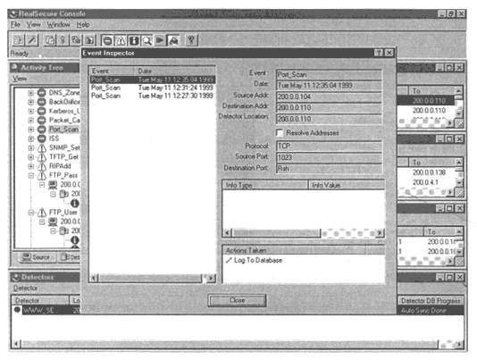

Безопасность >>>
АТАКА НА INTERNETСредства автоматизированного контроля безопасности
Мы уже говорили о пользе средств автоматизированного контроля безопасности отдельного компьютера, а также всей подсети, за которую он отвечает, для системного администратора. Естественно, такие средства появлялись ранее, и чаще других встречаются названия COPS (Computer Oracle and Password System), SATAN (Security Administrator Tool for Analizyng Networks), ISS (Internet Security Scanner). К сожалению, они не лишены недостатков:
Прослеживается явная аналогия программ с антивирусными сканерами первого поколения - те знали лишь строго определенный набор вирусов, а новые вирусы добавлялись только в следующем выпуске программы. Если посмотреть на возможности современных антивирусных программ - это и оперативное лечение вирусов, и автоматизированное пополнение базы вирусов самим пользователем, и поиск неизвестных вирусов, то можно пожелать, чтобы хороший сканер Internet смог позаимствовать некоторые из них. В первую очередь - пополнять базы новыми уязвимостями. Причем в наши дни сделать это несложно - достаточно лишь скачивать информацию с источников типа CERT или СIАС, занимающихся как раз сбором таких сведений. Программа SATANПосле общего введения мы решили познакомить читателя с таким нашумевшим средством, как SATAN, которое и до сих пор иногда считается чуть ли ни самой опасной программой из написанных, на что указывает и зловещее название, и возможность влезть в самый защищенный компьютер (рис. 9.6). Насчет названия сразу подчеркнем, что в момент инсталляции с помощью специальной процедуры вы можете поменять его на SANTA (Security Analysis Network Tool for Administrator), а заодно и зловещего сатану на симпатичного Деда Мороза (рис. 9.7). А что касается влезания в компьютер (не любой, конечно) - если подобная программа и имелась бы у хакеров или спецслужб, то она никогда не стала бы свободно распространяться по Internet, как это происходит с SATAN.
На самом деле SATAN - это добротно сделанная, с современным интерфейсом программа для поиска брешей в вашей подсети (Intranet - как модно говорить в последнее время), написанная на машинно-независимых языках Perl и С, поэтому она в некоторой мере преодолевает первый из вышеописанных недостатков. SATAN даже допускает возможность для расширения и вставки новых модулей. К сожалению, во всем остальном ей присущи указанные недостатки, в том числе и самый главный - она уже устарела и не может в настоящий момент серьезно использоваться ни администраторами, ни хакерами. Поэтому непонятен мистический страх перед всемогуществом SATAN. Авторы, готовя материал для книги, сами столкнулись с таким отношением и были немало этим удивлены. Однако на момент выхода (1995 г.) программа была достаточно актуальной, содержала в себе поиск большинства уязвимостей, описанных в разделе "Типичные атаки". В частности, последняя (во всех смыслах) ее версия ищет уязвимости в следующих службах:
Существуют также и дополнения к SATAN, в которые включены другие уязвимости. Для поиска уязвимостей программа сначала различными способами собирает информацию о вашей системе, причем уровень проникновения конфигурируется пользователем и может быть легким, нормальным или жестким (рис. 9.8).
 Рис. 9.8. Настройки программы SATAN Легкий уровень, по утверждению авторов программы, не может быть обнаружен атакуемой стороной (по крайней мере, такая активность программы не принимается за враждебную) и включает в себя DNS-запросы для выяснения версии операционной системы и другой подобной информации, которую можно легально получить с использованием DNS. Далее она посылает запрос на службу RPC (remote procedure call), чтобы выяснить, какие rpc-сервисы работают. Нормальный уровень разведки включает в себя все запросы легкого уровня, а также дополняет их посылкой запросов (сканированием) некоторых строго определенных портов, таких как FTP, telnet, SMTP, NNTP, UUCP и др., для определения установленных служб. Наконец, жесткий уровень включает в себя предыдущие уровни, а также дополняется полным сканированием всех возможных UDP- и TCP-портов для обнаружения нестандартных служб или служб на нестандартных портах. Авторы программы предостерегают, что такое сканирование может быть легко зафиксировано даже без специальных программ (например, на консоли могут появляться сообщения от вашего межсетевого экрана). Другим важным параметром, задаваемым при настройке SATAN, является глубина просмотра подсетей (proximity): 0 означает только один хост, 1 - подсеть, в которую он входит, 2 - все подсети, в которые входит подсеть данного хоста, и т.д. Авторы средства подчеркивают, что ни при каких обстоятельствах это число не должно быть более 2, иначе SATAN выйдет из-под контроля и просканирует слишком много внешних подсетей. Собственно ничем более страшным, кроме как сканированием портов и обнаружением работающих служб и их конфигурации, SATAN не занимается. При этом, если находятся потенциальные уязвимости, она сообщает об этом. Как пишут сами авторы программы, фаза проникновения в удаленную систему не была реализована. SATAN использует очень современный интерфейс - все сообщения программы оформляются в виде HTML-страниц, поэтому работа с ней мало чем отличается от плавания (surf) по Internet в любимом браузере (SATAN поддерживает любой из них, будь то lynx, Mosaic или Netscape). Пользователь может отсортировать найденные уязвимости (по типу, серьезности и т.п.) и тут же получить развернутую информацию по каждой из них. Для поддержки браузеров в SATAN входит собственный http-сервер, выполняющий ограниченное число запросов, а связь с ним осуществляется при помощи случайного 32-битного числа (magic cookie), которое выполняет дополнительную аутентификацию http-клиента. Иначе говоря, оно служит для предотвращения перехвата конфиденциальной информации браузером, отличным от запущенного самой SATAN, а также против любого взаимодействия с собственным http-сервером SATAN. Любопытно, что версии до 1.1.1 в этой схеме аутентификации тоже содержали ошибку, которая даже попала в один из бюллетеней CERT. Итак, типичный сценарий работы с SATAN заключается в следующем:
Администратору безопасности рекомендуется просканировать все свои хосты, а также все доверенные хосты, обязательно спросив на это разрешение у их администраторов. Несмотря на то что SATAN устарела, выполнив это, вы сможете быстро получить список используемых сетевых служб и их версий и проверить, нет ли среди них уязвимых, воспользовавшись материалами CERT или СIАС. Семейство программ SAFEsuiteВ последние годы заслуженной популярностью пользуются программные средства, предлагаемые компанией Internet Security Systems (ISS, http://www.iss.net). Они имеют достаточно долгую историю, в частности программа Internet Security Scanner (тоже ISS) известна с 1992 года, когда она была еще условно бесплатной и работала только под UNIX. С тех пор многое изменилось. В настоящее время компания ISS производит целое семейство продуктов автоматизированного контроля безопасности и обнаружения атак SAFEsuite. Туда входит сильно измененная Internet Scanner (по существу, это уже другая программа), анализирующая систему снаружи; System Scanner, анализирующая ее изнутри; и RealSecure, обнаруживающая и отражающая удаленные атаки. Безусловным достоинством этих программ является то, что они регулярно обновляются, причем в них добавляется не только описание новых уязвимостей и подвидов атак, но и новые механизмы их обнаружения и отражения. Именно мощная поддержка семейства SAFESuite и выводит его в лидеры - иначе через полгода эти программы были бы никому не нужны, как это случилось со многими разработками конкурентов. Значительные вложения оправдывают и цену - эти программы далеко не бссплатны, в отличие от SATAN, и стоят сотни долларов, что в данном случае неплохо, так как несколько ограничит число потенциальных кракеров. Для запуска программ нужен ключ, пересылаемый вам при покупке пакета, а в оценочную (evaluation) версию обычно включен ключ, который разрешит вам сканирование только своего собственного хоста. Это семейство реализовано под 10 платформ:
Любая из реализаций знает уязвимости и других платформ. Система Internet Scanner, хотя должна запускаться на одной из вышеперечисленных платформ (за исключением Windows 9х и IRIX), может быть использована для анализа защищенности любых систем, основанных на стеке протоколов TCP/IP. Функционально Internet Scanner 5.6 (последняя версия па начало 1999 года) состоит из трех частей: сканер межсетевого экрана (Firewall Scanner), Web-сканер (Web Security Scanner) и сканер Intranet (Intranet Scanner). При этом, как и в SATAN, есть три стандартных уровня сканирования - легкий, нормальный и жесткий, но пользователь может сам настроить те уязвимости, которые войдут в каждый уровень сканирования (рис. 9.9). К тому же он имеет широкие возможности по редактированию следующих классов уязвимостей и проверок:
 Рис. 9.9. Рабочий режим программы Internet Scanner Это единственная система такого класса, получившая в 1998 году сертификат Государственной технической комиссии при Президенте РФ № 195 от 02.09.98. В отличие от системы Internet Scanner, рассматривающей хосты на уровне сетевых сервисов, System Scanner проводит анализ на уровне операционной системы, что позволяет ей протестировать гораздо больше потенциальных уязвимостей типа локальных переполнений буфера, неверных прав на файлы или каталоги и т. и. Поэтому, несмотря на возможность некоторого дублирования информации в создаваемых отчетах, этот продукт дополняет Internet Scanner. System Scanner, помимо UNIX и Windows NT, поддерживает также проверку ОС Windows 95/98. Сетевой монитор RealSecureНаконец, последний и самый быстроразвивающийся продукт - сетевой монитор безопасности RealSecure 3.0 (рис. 9.10). Первоначально он мог только обнаруживать и по факту обнаружения останавливать удаленные атаки. В последних версиях, благодаря возможности управления межсетевым экраном и маршрутизатором, он может также и предотвращать их, динамически меняя правила фильтрации на межсетевом экране или списке контроля доступа (ACL) маршрутизатора. Монитор ориентирован на защиту как целого сегмента сети, так и конкретного узла. Для обнаружения атак он использует так называемые сигнатуры, чем еще раз подтверждается сходство подобных продуктов с антивирусными сканерами. В базе данных RealSecure есть следующие классы сигнатур удаленных атак (рис. 9.11):
На сегодняшний день, по мнению многих экспертов, продукты семейства SAFEsuite являются лидерами на рынке.
 Рис. 9.10. Сетевой монитор RealSecure
 Рис. 9.11. Детализация событий в RealSecure
|